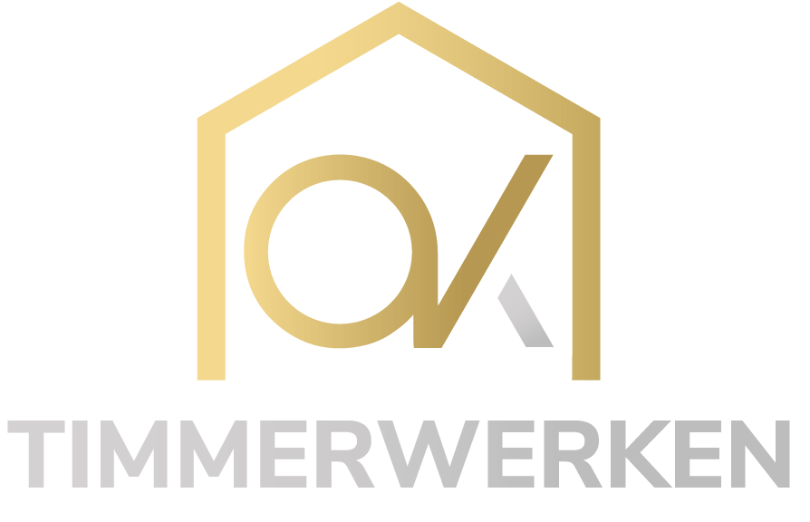

Alle drie zijn vectorvormen, zonder verlopen, en getekend om ook op 16 pixels en in één kleur te werken — precies wat het huidige logo niet kan. De letters in het woordmerk worden in het eindpakket omgezet naar vormen, zodat er geen lettertype nodig is.
De evolutie van het huidige logo: het gevelsilhouet blijft, maar wordt een gesloten vorm met de letters OK eruit gespaard. Daardoor is het monogram eindelijk leesbaar en blijft de vorm herkenbaar voor bestaande klanten. Dichtst bij wat er nu staat.
Geen huis maar een dakspant: twee kepers, een trekbalk en een hanenbalk — het meest herkenbare teken van timmerwerk dat er bestaat. Abstract, bouwkundig, en van alle drie het best schaalbaar: dit blijft op 16 pixels én op een bus leesbaar.
De letters zelf zijn het merk: een perfecte cirkel als O en een K waarvan de bovenarm op dakhelling staat. Geen huisje meer, wel de verwijzing. Het meest eigentijdse van de drie en het sterkst op social, waar een profielfoto rond is en een monogram het beste werkt.
Zelfde formaten, zodat de verschillen zichtbaar worden. Let op wat er op 32 en 16 pixels overblijft, en dat er in de woordregel geen "OK" staat.

origineel, op witZodra er een richting gekozen is, lever ik: beeldmerk, woordmerk en combinatie als SVG en PNG (transparant, meerdere maten) · eenkleurvarianten zwart en wit voor borduren, graveren en zeefdruk · favicon-set · profielfoto en omslagbanner voor social · een HTML-mailhandtekening · en een briefpapier- en offertekop. Plus een korte huisstijlpagina met de kleuren, het lettertype en de witruimteregels.